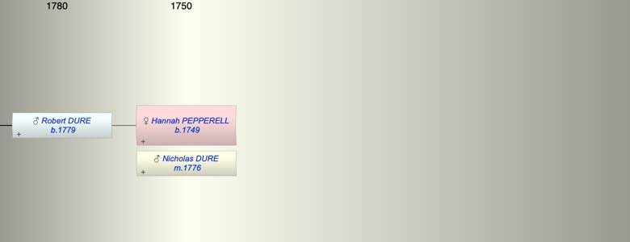

| [Index] |
| Hannah PEPPERELL (1749 - ) |
|  |
| b. 1749 at Slapton |
| m. 25 Jun 1776 Nicholas DURE |
| Near Relatives of Hannah PEPPERELL (1749 - ) | ||||||
| Relationship | Person | Born | Birth Place | Died | Death Place | Age |
| Self | Hannah PEPPERELL | 1749 | Slapton | |||
| Husband | Nicholas DURE | |||||
| Son | Robert Pepperell DURE | 1779 | Stokenham, Devon | |||
| Daughter in Law | Sarah PODGER | 1782 | Langport, Somerset | |||
| Granddaughter | Susan DURE | abt 1812 | 1891 | Plympton St Mary | 79 | |
| Grandson | Robert DURE | 1816 | Langport | 16 Jun 1866 | Coleridge, Devon | 50 |
| Grandson | William DURE | 1816 | ||||
| Events in Hannah PEPPERELL (1749 - )'s life | |||||
| Date | Age | Event | Place | Notes | Src |
| 1749 | Hannah PEPPERELL was born | Slapton | Note 1 | ||
| 25 Jun 1776 | 27 | Married Nicholas DURE | Note 2 | ||
| 1779 | 30 | Birth of son Robert Pepperell DURE | Stokenham, Devon | Note 3 | |
| Death of son Robert Pepperell DURE | Note 4 | ||||
| Personal Notes: |
|
also 20 May 1753 Slapton dau off Robert and Mary no this is Ann
did she go to Canada and died there see https://www.ancestry.co.uk/family-tree/person/tree/116220048/person/342449823496/facts |
| Created on a Mac™ using iFamily for Mac™ on 15 Sep 2023 |